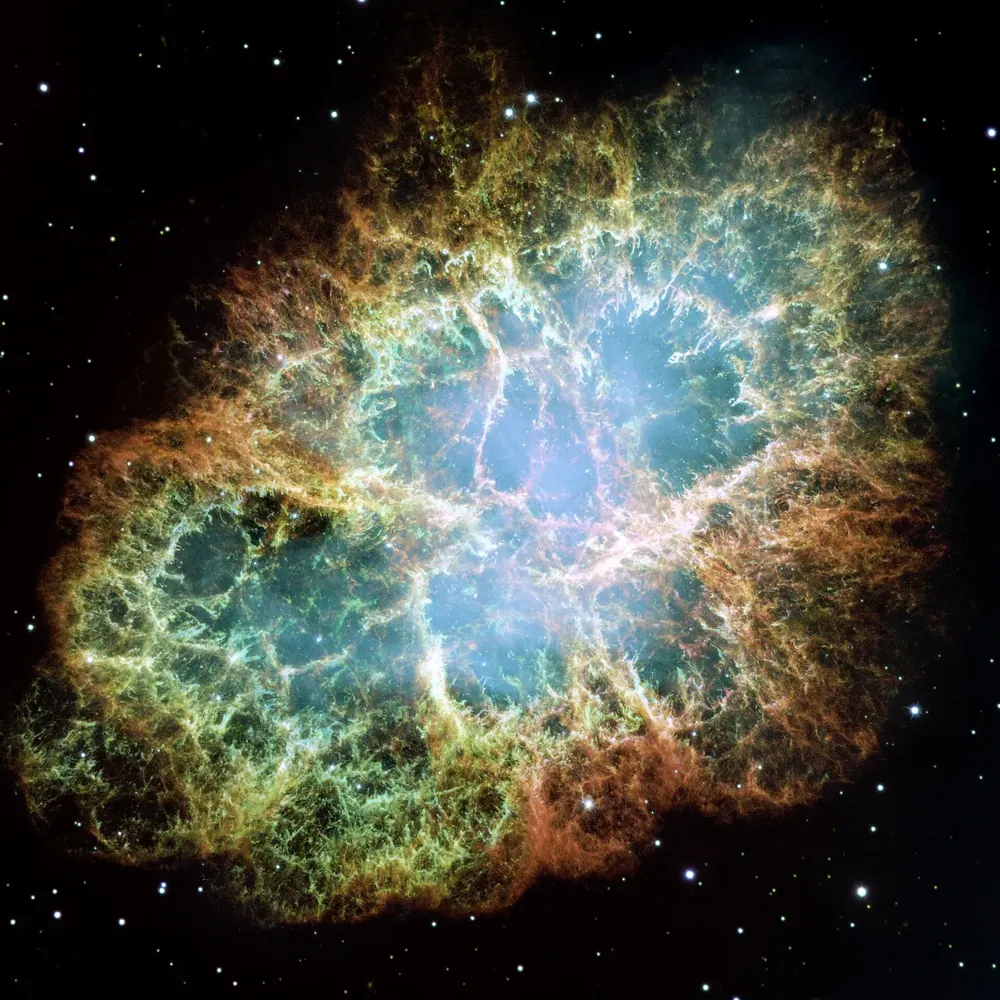

← Black holesब्लैक होलAgujeros negrosBuracos negrosTrous noirsالثقوب السوداء
How black holes formब्लैक होल कैसे बनते हैंCómo se forman los agujeros negrosComo se formam os buracos negrosComment naissent les trous noirsكيف تتكوّن الثقوب السوداء
Some come from dying stars. Others sit in the middle of galaxies. There are also sizes in between.कुछ मरते तारों से बनते हैं। कुछ galaxies के बीच में बैठे हैं। बीच के आकार भी होते हैं।

📷 NASA, ESA, J. Hester and A. Loll (Arizona State University) · Public domain
Stellar black holesतारकीय (stellar) ब्लैक होलAgujeros negros estelaresBuracos negros estelaresTrous noirs stellairesالثقوب السوداء النجمية
A star shines because fusion in its core pushes outward while gravity pulls inward. When a very massive star (roughly 20 or more times the Sun) runs out of fuel, its core collapses in a fraction of a second.तारा इसलिए चमकता है क्योंकि उसके केंद्र में fusion बाहर की ओर धक्का देता है और gravity अंदर की ओर खींचती है। जब बहुत भारी तारे (लगभग सूरज से 20 गुना या ज़्यादा) का ईंधन ख़त्म होता है, तो उसका केंद्र एक सेकंड के भी बहुत छोटे हिस्से में ढह जाता है।
The outer layers may be blown away in a supernova. If the core left behind is heavy enough, nothing can stop it from collapsing further, and a black hole of a few to a few dozen Suns is born. Sometimes a star may collapse almost quietly, with hardly any explosion.बाहरी परतें supernova में उड़ सकती हैं। अगर बचा हुआ केंद्र काफ़ी भारी हो, तो उसे ढहने से कोई नहीं रोक सकता, और कुछ से लेकर कुछ दर्जन सूरजों के बराबर ब्लैक होल बन जाता है। कभी-कभी तारा लगभग चुपचाप भी ढह सकता है, बिना बड़े धमाके के।
Supermassive black holesविशाल (supermassive) ब्लैक होलAgujeros negros supermasivosBuracos negros supermassivosTrous noirs supermassifsالثقوب السوداء الهائلة
Most large galaxies have a black hole in the middle with millions or even billions of Suns. How they grew so big so early in the universe is still being studied. They probably started as smaller seeds, swallowed gas, and merged with other black holes.ज़्यादातर बड़ी galaxies के बीच में लाखों या अरबों सूरज के बराबर ब्लैक होल होता है। ब्रह्मांड में इतनी जल्दी वे इतने बड़े कैसे हो गए, इस पर अब भी शोध चल रहा है। संभवतः वे छोटे बीजों से शुरू हुए, गैस निगली, और दूसरे ब्लैक होलों से मिलते गए।
The middle sizesबीच के आकारLos tamaños intermediosOs tamanhos intermediáriosLes tailles intermédiairesالأحجام المتوسطة
Between the two lie intermediate black holes, roughly 100 to 100,000 Suns. They are hard to find. One strong sign was a merger seen in 2019 that left a black hole of about 140 Suns.दोनों के बीच intermediate ब्लैक होल आते हैं, लगभग 100 से 1,00,000 सूरज। इन्हें ढूँढना मुश्किल है। 2019 में देखे गए एक विलय (merger) ने लगभग 140 सूरज के बराबर ब्लैक होल छोड़ा, जो एक मज़बूत संकेत था।
Some scientists also think tiny primordial black holes may have formed in the very early universe. None has been found. For now it is only an idea.कुछ वैज्ञानिक यह भी मानते हैं कि बहुत शुरुआती ब्रह्मांड में छोटे primordial ब्लैक होल बने हो सकते हैं। अभी तक कोई मिला नहीं है। फ़िलहाल यह सिर्फ़ एक विचार है।
Four kinds at a glanceचार प्रकार एक नज़र मेंCuatro tipos de un vistazoQuatro tipos num relanceQuatre types en un coup d’œilأربعة أنواع في لمحة
| Kindप्रकारTipoTipoTypeالنوع | Massद्रव्यमानMasaMassaMasseالكتلة | ExampleउदाहरणEjemploExemploExempleمثال |
|---|---|---|
| StellarतारकीयEstelarEstelarStellaireنجمي | a few to ~100 Sunsकुछ से ~100 सूरजde unos pocos a ~100 Solesde alguns a ~100 Sóisde quelques-uns à ~100 Soleilsمن بضع شموس إلى ~100 شمس | Cygnus X-1 (about 21 Suns)Cygnus X-1 (लगभग 21 सूरज)Cygnus X-1 (unos 21 Soles)Cygnus X-1 (cerca de 21 Sóis)Cygnus X-1 (environ 21 Soleils)قوس X-1 (نحو 21 شمسًا) |
| Intermediateमध्यमIntermedioIntermediárioIntermédiaireمتوسط | ~100 to 100,000 Suns~100 से 1,00,000 सूरज~100 a 100.000 Soles~100 a 100.000 Sóis~100 à 100 000 Soleils~100 إلى 100,000 شمس | Candidates onlyसिर्फ़ संभावितSolo candidatosApenas candidatosCandidats seulementمرشحات فقط |
| SupermassiveविशालSupermasivoSupermassivoSupermassifهائل الكتلة | millions to billions of Sunsलाखों से अरबों सूरजde millones a miles de millones de Solesde milhões a bilhões de Sóisde millions à milliards de Soleilsمن ملايين إلى مليارات الشموس | Sagittarius A* (4.3 million)Sagittarius A* (43 लाख)Sagitario A* (4,3 millones)Sagitário A* (4,3 milhões)Sagittarius A* (4,3 millions)الرامي أ* (4.3 مليون) |
| Primordialआदिम (primordial)PrimordialPrimordialPrimordialبدائي | unknownअज्ञातdesconocidodesconhecidoinconnuغير معروف | Not foundमिला नहींNo encontradosNão encontradosNon trouvésلم يُعثر عليها |
Our own Galaxy probably holds tens of millions of stellar black holes or more. Most are invisible because they are quiet: nothing is falling into them.हमारी अपनी आकाशगंगा में शायद करोड़ों या उससे ज़्यादा तारकीय ब्लैक होल हैं। ज़्यादातर अदृश्य हैं क्योंकि वे शांत हैं: उनमें कुछ गिर नहीं रहा।